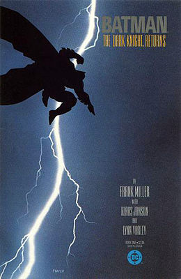
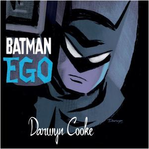
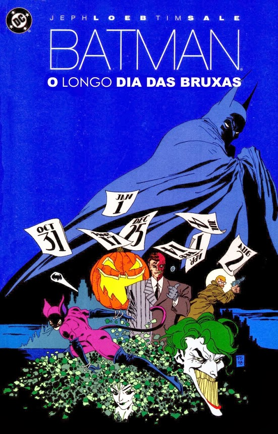
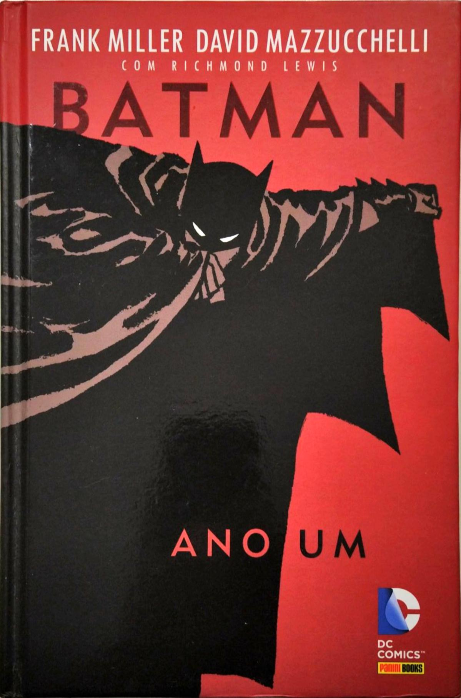

O Batman também chamado como Homem-Morcego, Cavaleiro das Trevas, Maior Detetive do Mundo, é um personagem fictício e super-herói da editora DC Comics, fez sua primeira aparição na Hq Detective Comics#27 (maio de 1939) .
O Homem-Morcego tem varias hqs exelentes, mas hoje vou te mostrar as melhores.

SINOPSE
Em Batman - O Cavaleiro das Trevas, Bruce Wayne, aos 55 anos, está aposentado e tenta levar o que mais se aproxima de uma vida comum, mas a onda de crimes em Gotham City não deixa.
Inconformado, ele passa a impedir um crime aqui e outro ali, sempre em meio às trevas. Mas não adianta, em pouco tempo a notícia se espalha: o Batman voltou à ativa!
O problema é que os super-heróis estão há dez anos proibidos de agir em público pelo governo norte-americano. E o mundo vive sob o medo de uma guerra nuclear entre Estados Unidos e União Soviética (a obra é de 1986). Agora, o Morcego terá de lidar com o problema que arrumou - e ele adora isso.
A história tambem apresenta Carrie Kelley como o novo Robin e culmina com um confronto contra o Superman.

SINOPSE
A Hq foca somente no Batman e sua mente "interior", que travam uma intensa discussão sobre as açoes, inclusive traz à tona os diversos sucessos e fracassos de sua carreira. Os dois lados apresentam fortes argumentos para defender seus pontos, e o debate vai aumentando até seu final. O autor demonstra ter uma grande compreensão sobre o heroi do herói e de como seu universo funciona, desconstruindo-o brilhantemente.
Este Batman esta "diferente". Ele é uma entidade que Bruce criou no seu consciente, quando os seus pais foram mortos. Estas duas entidades distintas entram em conflito, no qual Batman acusa Bruce do seu código de moral que segue; critica os métodos que usa e diz os que deveriam ser aplicados para que o crime fosse parado; e questiona a sua verdadeira motivação para continuar a ser o justiceiro noturno.
A arte de Darwyn Cooke é um dos maiores destaques. Os quadros, as cores, o jogo de luz e sombra, as proporções, tudo é extremamente bem planejado para acompanhar o roteiro e as ideias propostas. Expressões faciais e corporais dos personagens enquanto lê: somente elas já comunicam tanto quanto os próprios diálogos. Aliás, seu estilo remete ao de Bruce Timm, responsável pelo design das animações da Warner pertencentes ao selo DC Animated Universe.
texto de base: https://feededigno.com.br/quadrinhos/critica-batman-ego-2000-dc-comics/

Batman: O Longo Dia das Bruxas foi uma série de quadrinhos limitada escrita por Jeph Loeb e desenhada por Tim Sale no ano de 1996 pela DC Comics. No Brasil, foi lanaçada pela Abril e, posteriormente, pela Panini Comics no ano de 2008.
SINOPSE
Um certo tempo após os acontecimentos de Ano Um, Batman, o promotor Harvey Dent e o capitão Jim Gordon se unem para combater o crime organizado na cidade de Gotham City liderado por Carmine Falcone. Porém, um novo criminoso surge em Gotham, o chamado "Feriado", que mata membros da máfia em datas comemorativas, deixando sempre uma arma calibre 22 e algo que simbolize o feriado que se está comemorando. As investigações duram aproximadamente um ano, e no decorrer da história, é notável uma mudança no comportamento de Harvey Dent, assim como também é desenvolvida sua relação com Gordon e Batman no combate ao crime de Gotham City.
texto de base: https://batman.fandom.com/pt-br/wiki/Batman:_O_Longo_Dia_das_Bruxas

Batman: Ano Um foi uma aventura de quatro partes publicada na revista mensal do Morcego e lançada no país, originalmente em setembro de 1987, em Batman nº 1, sendo republicada quatro vezes, incluindo esta edição de luxo da Panini. As quatro partes da trama são como atos narrativos de uma peça literária, apresentando aspectos diferentes da criação da figura do Morcego. Indo além da origem do herói, a história apresenta a chegada de Gordon a Gotham City, um elemento narrativo que se amarra à fundação da personagem central.
Situada em um período de um ano, a história é bem dosada temporalmente tanto por cenas-chave da concepção da personagem como por cenas breves de treinamentos e do cotidiano policial por parte de Gordon. Miller leva ao pé da letra a concepção de um ano e apresenta o lento desenvolvimento desta dupla. Batman ainda é um homem em treinamento, à procura dos primeiros contatos para testar suas habilidades, enquanto Gordon, recém transferido, observa como funciona a polícia corrupta do local.
Miller desenvolve o roteiro com simplicidade sem perder o requinte narrativo. Equilibra-se bem entre Batman e Gordon, demonstrando que ambos são peças fundamentais que representam um mesmo ideal: a manutenção da cidade e da lei. A obra observa o amadurecimento destas personagens: Batman pela rigidez e disciplina da luta após erros e acertos em campo, e Gordon como o único policial incorruptível da corporação, tendo de arcar com a responsabilidade de ser visto como um pária pela equipe. Em comum, ambos possuem a retidão e admiram-se mutuamente, mesmo sem ainda se conhecerem. Não à toa, boa parte deste roteiro foi inspiração para a concepção de Batman Begins de Christopher Nolan. Não só o encontro com Gordon é idêntico como também o são outras cenas chave desta história.
Se Batman é a figura heroica vista com breve distanciamento por conta da disciplina e do luto que carrega desde a infância, Gordon é concebido como o homem que realiza o possível na medida de suas forças. Batman sempre assemelhou-se com um deus capaz de sobrepujar tudo e todos. Mesmo que o público reconheça-o como humano, seus feitos o elevaram a um olimpo invisível. Enquanto o futuro Comissário é uma figura imperfeita que trai a esposa grávida e sofre violência por parte de seus companheiros, ainda assim demonstra que em seu caldeirão as intenções boas se sobressaem. Não à toa é um dos personagens mais empáticos do universo do Morcego.
Batman demonstra desde o princípio a engenhosidade tática que hoje é admirada por seus leitores. E mesmo inserido em um universo fictício, a história de Miller apresenta uma vertente realista que transforma a loucura heroica da personagem em um elemento mais crível, sendo a base para a visão que leitores atuais têm do Morcego: um humano capaz de sobrepujar a própria morte e eventuais colunas quebradas.
texto de base: https://vortexcultural.com.br/quadrinhos-e-hqs/batman-ano-um/